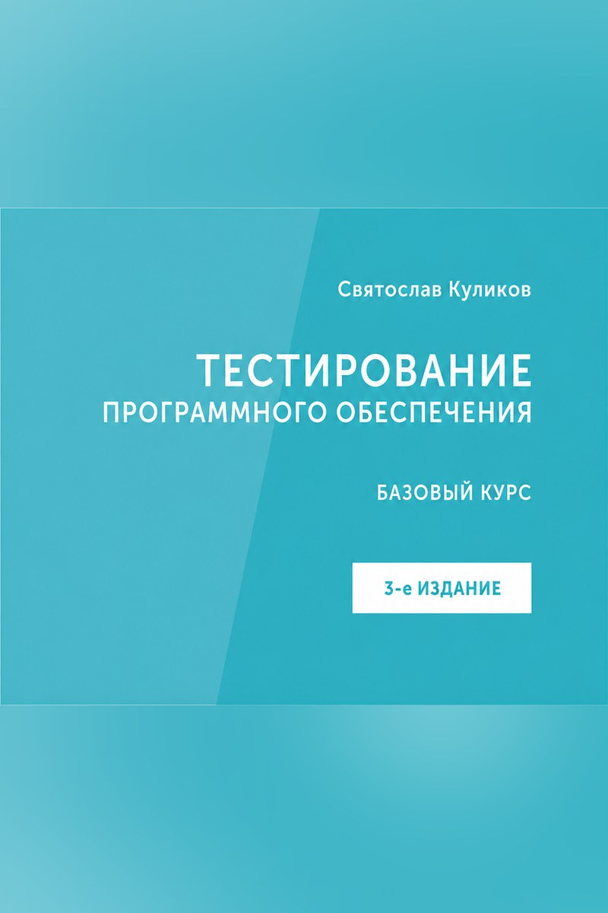
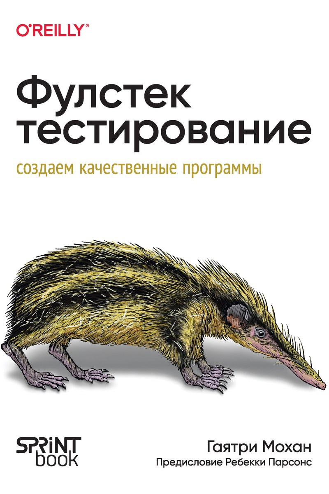

Одностраничные выжимки прочитанных книг: структура, ключевые идеи и то, что пригождается в работе. Каждый конспект — самодостаточная страница со своим оформлением, поиском и фильтрами по разделам. Книгу он не заменяет: примеры, доказательства и разборы остаются в оригинале, ссылка на издание есть на каждой странице.
-

Тестирование программного обеспечения. Базовый курс
Учебник, а не сборник приёмов: что считать дефектом, как устроены требования и тест-кейсы, по каким тринадцати осям классифицируют тестирование и когда автоматизация начинает вредить.
164 пункта → -

Фулстек-тестирование
Качество больше не равно отсутствию ошибок. Десять навыков проверки на всех уровнях приложения — от исследовательского тестирования до защищённости, производительности и доступности, с разбором стратегии для каждого.
150 пунктов → -
Жемчужины разработки. Чему мы научились за 50 лет создания ПО
Полвека опыта в шести темах: требования, проектирование, управление проектами, культура, качество и процессы. Ни один урок не про технологию — все про места, где команды спотыкаются снова и снова.
60 уроков → - Следующая книга Полка пополняется по мере чтения.